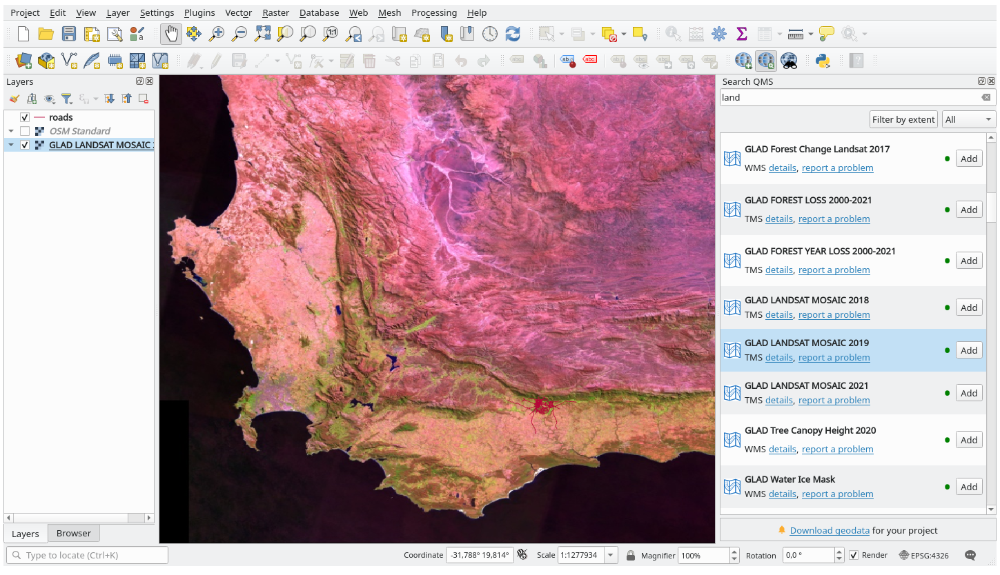

9.2. သင်ခန်းစာ - အသုံးဝင်သော QGIS Plugin များ (Lesson: Useful QGIS Plugins)
ယခုဆိုလျှင် သင့်အနေဖြင့် plugin များကို install ပြုလုပ်ခြင်း၊ အသုံးပြုနိုင်ရန်ဖွင့်ပေးခြင်း နှင့် ပိတ်ခြင်းများကို လုပ်ဆောင်နိုင်ပြီဖြစ်ပါသည်။ အသုံးဝင်သော plugin များ၏ ဥပမာအချို့ကို ကြည့်ခြင်းဖြင့် လက်တွေ့လုပ်ဆောင်ကြည့်ပါမည်။
ဤသင်ခန်းစာအတွက် ရည်မှန်းချက်- Plugin interface ကို အကျွမ်းတဝင်ရှိစေရန် နှင့် အသုံးဝင်သော plugin များအချို့အကြောင်းသိစေရန်။
9.2.1. ★☆☆ လိုက်လုပ်ကြည့်ပါ - QuickMapServices Plugin (Follow Along: The QuickMapServices Plugin)
QuickMapServices plugin သည် QGIS project ထဲသို့ အောက်ခံမြေပုံများ ထည့်သွင်းပေးသော ရိုးရှင်းပြီးအသုံးပြုရလွယ်သည့် plugin တစ်ခုဖြစ်ပါသည်။ ၎င်းတွင် အမျိုးမျိုးသော ရွေးချယ်စရာများနှင့် setting များရှိပါသည်။ ၎င်း၏ အသွင်အပြင်အချို့ကို လေ့လာကြည့်ကြပါမည်။
မြေပုံအသစ်တစ်ခုစတင်ပြီး
training_dataGeopackage မှ roads layer ကိုထည့်သွင်းပါ။QuickMapServices plugin ကို install လုပ်ပါ။
တွင် နှိပ်ပါ။ ပထမဆုံး menu တွင် အမျိုးမျိုးသော မြေပုံပံ့ပိုးပေးသူများ (
OSM၊NASA) ကိုစာရင်းပြုစုပေးပါသည်။တစ်ခုပေါ်တွင် click နှိပ်လိုက်ပြီး project ထဲသို့ အောက်ခံမြေပုံကို ထည့်သွင်းပါ။

QMS ၏အဓိကအားသာချက်များထဲမှ တစ်ခုသည် များစွာသော data ပံ့ပိုးပေးသူများဆီသို့ ဝင်ရောက်သုံးစွဲခွင့်ပေးထားခြင်းဖြစ်သည်။ ၎င်းတို့ကို ထည့်သွင်းကြည့်ပါမည်။
ကိုနှိပ်ပါ
More services tab သို့သွားပါ။
အဆိုပါ tab ၏ စာတိုကို သေချာစွာဖတ်ပြီး သဘောတူညီပါက Get Contributed pack ခလုတ်ကို နှိပ်ပါ။
Save ကိုနှိပ်ပါ။
menu ကိုပြန်ဖွင့်ပါ၊ ပံ့ပိုးသူများ ပိုမိုများပြားလာသည်ကို မြင်တွေ့ရပါလိမ့်မည်။

သင့်လိုအပ်ချက်နှင့် အကိုက်ညီဆုံးတစ်ခုကို ရွေးချယ်ပြီး data ကို project ထဲသို့ထည့်သွင်းပါ။
ရရှိနိုင်သော data ပံ့ပိုးပေးသူများအတွင်း ရှာဖွေမှု ပြုလုပ်နိုင်ပါသေးသည်။
ကိုနှိပ်ပြီး plugin ၏ ရှာဖွေမှု tab ကိုဖွင့်ပါ။ Plugin ၏ အဆိုပါ option တွင် မြေပုံ canvas ၏လက်ရှိ extent ပေါ်မူတည်ပြီး သို့မဟုတ် ရှာဖွေသည့်စာလုံး ပေါ်မူတည်ပြီး ရရှိနိုင်သောအောက်ခံမြေပုံများကို filter (စစ်ထုတ်) လုပ်ပေးနိုင်ပါသည်။
Filter by extent ကိုနှိပ်သောအခါ service တစ်ခု ရရှိနေသည်ကို တွေ့ရပါမည်။ Service တစ်ခုမှမတွေ့လျှင် zoom ချုံ့ပြီး မြင်ကွင်းကို ရွှေ့ကြည့်ပါ သို့မဟုတ် စာလုံးတစ်ခုဖြင့် ရှာဖွေမှုလုပ်ပါ။
ပေါ်လာသော dataset ကို ထည့်သွင်းရန် ၎င်းဘေးရှိ Add ခလုတ်ကို နှိပ်ပါ။
အောက်ခံမြေပုံကို ထည့်သွင်းပေးမည်ဖြစ်ပြီး မြေပုံအတွက် နောက်ခံတစ်ခုရရှိမည်ဖြစ်သည်။

{kind=link}
9.2.2. ★☆☆ လိုက်လုပ်ကြည့်ပါ - QuickOSM Plugin (Follow Along: The QuickOSM Plugin)
QuickOSM plugin သည် ရိုးရှင်းသော interface တစ်ခုရှိပြီး OpenStreetMap data များကို ဒေါင်းလုဒ်ပြုလုပ်ပေးနိုင်ပါသည်။
Project အသစ်တစ်ခုကိုစတင်ပြီး
training_dataGeoPackage မှ roads layer ကိုထည့်သွင်းပါ။QuickOSM plugin ကို install ပြုလုပ်ပါ။ Plugin သည် QGIS toolbar ထဲတွင် ခလုတ်အသစ် ၂ ခုကို ထည့်သွင်းပေးမည်ဖြစ်ပြီး menu ထဲတွင် သုံးစွဲနိုင်မည်ဖြစ်သည်။
QuickOSM dialog ကိုဖွင့်ပါ။ Plugin တွင် မတူညီသော tab များစွာ ပါရှိပါသည်- Quick Query tab ကို အသုံးပြုပါမည်။
ယေဘုယျ Key တစ်ခုကို ရွေးချယ်ပြီး သီးသန့် feature များကို ဒေါင်းလုဒ်ပြုလုပ်နိုင်ပါသည် သို့မဟုတ် ပိုမိုပြီးအသေးစိတ်ဖြစ်စေရန် သီးသန့် Key နှင့် Value အတွဲတစ်ခုကို ရွေးချယ်ပြီး ဒေါင်းလုဒ်ပြုလုပ်နိုင်ပါသည်။
Tip
Key နှင့် Value စနစ်နှင့် အကျွမ်းတဝင်မရှိပါက Help with key/value ခလုတ်ကိုနှိပ်ပါ။ ထိုသို့နှိပ်ခြင်းဖြင့် OpenStreetMap ၏ Key နှင့် Value သဘောတရားအကြောင်း အပြည့်အစုံရှင်းပြထားသော ဝက်ဘ်စာမျက်နှာတစ်ခု ပွင့်လာပါမည်။
Key menu ထဲတွင် railway ကိုရှာဖွေပြီး Value တွင် အလွတ် (empty) ထားပါ- တန်ဖိုးတစ်ခုခုကို သတ်မှတ်မပေးထားပဲ railway feature များအားလုံးကို ဒေါင်းလုဒ်ပြုလုပ်မည်ဖြစ်သည်။
Layer Extent drop-down menu ကိုနှိပ်ပြီး roads ကိုရွေးပါ။
Run query ခလုတ်ကို နှိပ်ပါ။

စက္ကန့်အနည်းငယ်ကြာပြီးနောက်တွင် plugin သည် railway အနေဖြင့် tag လုပ်ထားသော feature များအားလုံးကို ဒေါင်းလုဒ်ပြုလုပ်မည်ဖြစ်ပြီး မြေပုံထဲသို့ တိုက်ရိုက်ထည့်သွင်းပေးမည်ဖြစ်သည်။
Layer များအားလုံးကို legend ထဲတွင် ထည့်သွင်းပေးမည်ဖြစ်ပြီး မြေပုံ canvas ထဲတွင် ပြသပေးမည်ဖြစ်သည်။

Warning
QuickOSM သည် data များ ဒေါင်းလုဒ်ပြုလုပ်သောအခါ ယာယီ layer ကိုဖန်တီးပေးပါသည်။ ၎င်းတို့ကို အမြဲတမ်းအဖြစ် သိမ်းဆည်းလိုပါက layer ၏ဘေးရှိ  icon ကိုနှိပ်ပြီး ကြိုက်နှစ်သက်သော option များကိုရွေးချယ်ပါ။ နောက်တစ်နည်းအနေဖြင့် QuickOSM ထဲတွင် Advanced menu ကိုဖွင့်နိုင်ပြီး Directory menu ထဲတွင် data ကို သိမ်းဆည်းမည့်နေရာ ရွေးချယ်ပါ။
icon ကိုနှိပ်ပြီး ကြိုက်နှစ်သက်သော option များကိုရွေးချယ်ပါ။ နောက်တစ်နည်းအနေဖြင့် QuickOSM ထဲတွင် Advanced menu ကိုဖွင့်နိုင်ပြီး Directory menu ထဲတွင် data ကို သိမ်းဆည်းမည့်နေရာ ရွေးချယ်ပါ။
9.2.3. ★★★ လိုက်လုပ်ကြည့်ပါ - QuickOSM Query engine (Follow Along: The QuickOSM Query engine)
QuickOSM plugin မှ data များဒေါင်းလုဒ်ပြုလုပ်ရန် အမြန်ဆုံးနည်းလမ်းသည် Quick query tab ကိုအသုံးပြုပြီး parameter အချို့ သတ်မှတ်ခြင်းဖြစ်သည်။ သို့သော် ပိုမိုသီးသန့်ဖြစ်သော data များကို လိုအပ်လျှင် မည်သို့လုပ်မည်နည်း။
သင်သည် OpenStreetMap query တွင် ကျွမ်းကျင်သူဖြစ်လျှင် QuickOSM plugin ကို သင်၏ကိုယ်ပိုင် query များဖြင့် အသုံးပြုနိုင်ပါသည်။
QuickOSM တွင် အံ့ဩစရာကောင်းသော Overpass ၏ query engine နှင့်အတူ ကောင်းမွန်သော data parser တစ်ခုပါရှိပါသည်။ ၎င်းသည် သင်လိုအပ်သည့်အတိုင်း data များကို ဒေါင်းလုဒ်ပြုလုပ်ပေးနိုင်ပါသည်။
ဥပမာ- Dolomites ဟုခေါ်သော သီးသန့် တောင်တန်းဧရိယာနှင့်သက်ဆိုင်သည့် တောင်ထိပ် များကို ဒေါင်းလုဒ်ပြုလုပ်လိုပါသည်။
ထိုအလုပ်ကို Quick query tab ဖြင့် လုပ်ဆောင်၍မရနိုင်ပါ၊ ပိုမို၍အသေးစိတ်ရန်လိုအပ်ပြီး ကိုယ်ပိုင် query ကို ရေးသားရပါမည်။ ၎င်းကို ကြိုးစားကြည့်ကြပါမည်။
Project အသစ်တစ်ခုကို စတင်ပါ။
QuickOSM plugin ကိုဖွင့်ပြီး Query tab ကိုနှိပ်ပါ။
Query canvas ထဲတွင် အောက်ပါ code ကို ကူးထည့်ပါ-:
<!-- This shows all mountains (peaks) in the Dolomites. You may want to use the "zoom onto data" button. => --> <osm-script output="json"> <!-- search the area of the Dolomites --> <query type="area"> <has-kv k="place" v="region"/> <has-kv k="region:type" v="mountain_area"/> <has-kv k="name:en" v="Dolomites"/> </query> <print mode="body" order="quadtile"/> <!-- get all peaks in the area --> <query type="node"> <area-query/> <has-kv k="natural" v="peak"/> </query> <print mode="body" order="quadtile"/> <!-- additionally, show the outline of the area --> <query type="relation"> <has-kv k="place" v="region"/> <has-kv k="region:type" v="mountain_area"/> <has-kv k="name:en" v="Dolomites"/> </query> <print mode="body" order="quadtile"/> <recurse type="down"/> <print mode="skeleton" order="quadtile"/> </osm-script>
Note
ဤ query သည်
xmlပုံစံ ဘာသာစကားဖြင့် ရေးသားထားပါသည်။Overpass QLနှင့်ပိုမိုအကျွမ်းတဝင်ရှိလျှင် ဤဘာသာစကားအသုံးပြု၍ query ကို ရေးသားနိုင်ပါသည်။Run Query ကိုနှိပ်ပါ-

တောင်ထပ် layer ကို ဒေါင်းလုဒ်ပြုလုပ်ပေးမည်ဖြစ်ပြီး QGIS ထဲတွင် ပြသနေမည်ဖြစ်သည်-

Overpass Query language ကိုအသုံးပြုပြီး ရှုပ်ထွေးသော query များကို ရေးသားနိုင်ပါသည်။ ဥပမာအချို့ကို လေ့လာကြည့်ပြီး query ဘာသာစကားကို ကြိုးစားစမ်းသပ်ကြည့်ပါ။
9.2.4. ★☆☆ လိုက်လုပ်ကြည့်ပါ - DataPlotly Plugin (Follow Along: The DataPlotly Plugin)
DataPlotly plugin သည် vector attribute data ၏ D3 plot များကို ဖန်တီးပေးနိုင်ပါသည်။ plotly library ကြောင့် ဖန်တီးပေးနိုင်ခြင်းဖြစ်ပါသည်။
Project အသစ်တစ်ခုစတင်ပါ
exercise_data/pluginsfolder မှ sample_points layer ကိုထည့်သွင်းပါ★☆☆ လိုက်လုပ်ကြည့်ပါ - Plugin အသစ်များထည့်သွင်းခြင်း (Follow Along: Installing New Plugins) တွင် ဖော်ပြထားသည့် ညွှန်ကြားချက်များအတိုင်း Data Plotly ကိုရှာဖွေပြီး plugin ကို install လုပ်ပါ။
Toolbar ထဲရှိ icon အသစ်ကို click နှိပ်ခြင်းဖြင့် သို့မဟုတ် menu ထဲတွင် click နှိပ်ခြင်းဖြင့် plugin ကိုဖွင့်ပါ။
အောက်ပါဥပမာတွင် sample_points layer ၏ field ၂ ခုကို ရိုးရှင်းသော Scatter Plot တစ်ခု ဖန်တီးပါမည်။ DataPlotly Panel ထဲတွင်-
Layer filter ထဲတွင် sample_points ကိုရွေးချယ်ပါ၊ X Field အတွက် cl နှင့် Y Field အတွက် mg ကိုရွေးချယ်ပါ-
အရောင်များ၊ အမှတ်အသားအမျိုးအစား၊ အလင်းဖောက်နှုန်း နှင့် အခြား setting များကို ပြောင်းလဲလိုလျှင်- အောက်ပါ plot ကိုဖန်တီးရန် parameter အချို့ကို ပြောင်းလဲကြည့်ပါ။

Parameter များအားလုံးကို သတ်မှတ်ပြီးသည်နှင့် plot ကိုဖန်တီးရန် Create Plot ခလုတ်ကို နှိပ်ပါ။
Plot သည် interactive (အပြန်အလှန်တုံ့ပြန်လုပ်ဆောင်နိုင်) ဖြစ်ပါသည်- ဆိုလိုသည်မှာ plot canvas ကို အရွယ်အစားပြောင်းလဲရန်၊ ရွှေ့ရန် သို့မဟုတ် zoom အချုံ့/အချဲ့ ပြုလုပ်ရန် အပေါ်တွင်ရှိသော ခလုတ်များအားလုံးကို အသုံးပြုနိုင်ပါသည်။ ထို့အပြင် plot ၏ element တစ်ခုချင်းစီသည်လည်း interactive ဖြစ်ပါသည်- plot ပေါ်တွင် point တစ်ခု သို့မဟုတ် တစ်ခုထက်ပိုသော point များကို click နှိပ်ခြင်းဖြင့် plot canvas ထဲတွင် သက်ဆိုင်ရာ point (များ) ကို select ပြုလုပ်ပေးမည်ဖြစ်သည်။
Plot ၏ ညာဘက်အောက်ခြေထောင့်ရှိ  ကိုနှိပ်ပြီး
ကိုနှိပ်ပြီး png image တစ်ခုအနေဖြင့် သို့မဟုတ် ကိုနှိပ်ပြီး html ဖိုင်တစ်ခုအဖြစ် သိမ်းဆည်းနိုင်ပါသည်။
{kind=link}
နောက်ထပ်လုပ်နိုင်သည်များရှိပါသေးသည်။ တစ်ခါတရံတွင် စာမျက်နှာတစ်ခုတည်းပေါ်တွင် မတူညီသော variable များဖြင့် plot အမျိုးအစားမတူညီသည့် plot ၂ ခု (၂ခုထက်ပိုသော) ရှိလျှင် အသုံးဝင်နိုင်ပါသည်။ ၎င်းကို စမ်းကြည့်ကြပါမည်။
Plugin panel ၏ ဘယ်ဘက်အပေါ်ထောင့်ရှိ
 ခလုတ်ကိုနှိပ်ပြီး အဓိက plot setting သို့ပြန်သွားပါ
ခလုတ်ကိုနှိပ်ပြီး အဓိက plot setting သို့ပြန်သွားပါPlot Type တွင် Box Plot သို့ပြောင်းပါ
Grouping Field တွင် group ကိုရွေးချယ်ပြီး Y Field အနေဖြင့် ph ကိုရွေးချယ်ပါ
Panel ၏အောက်ခြေဘက်ရှိ Type of Plot တွင် SinglePlot မှ SubPlots သို့ပြောင်းပါ၊ default အတိုင်း Plot in Rows ကိုရွေးချယ်ပေးထားပါ။

Plot ရေးဆွဲရန် Create Plot ခလုတ်ကိုနှိပ်ပါ။
ယခုဆိုလျှင် plot စာမျက်နှာတစ်ခုတည်းတွင် scatter plot နှင့် box plot နှစ်မျိုးစလုံးကို ပြသနေမည်ဖြစ်သည်။ Plot item တစ်ခုချင်းစီကို click နှိပ်နိုင်မည်ဖြစ်ပြီး မြေပုံ canvas ထဲတွင် သက်ဆိုင်ရာ feature များကိုရွေးချယ်နိုင်မည်ဖြစ်သည်။
Tip
 tab ထဲတွင် plot တစ်ခုချင်းစီအတွက် လမ်းညွှန်စာမျက်နှာတစ်ခုစီ ရှိပါသည်။ Plot အမျိုးအစားများအားလုံးကို လေ့လာကြည့်ပြီး အခြားရရှိနိုင်သော setting များကို ကြည့်ပါ။
tab ထဲတွင် plot တစ်ခုချင်းစီအတွက် လမ်းညွှန်စာမျက်နှာတစ်ခုစီ ရှိပါသည်။ Plot အမျိုးအစားများအားလုံးကို လေ့လာကြည့်ပြီး အခြားရရှိနိုင်သော setting များကို ကြည့်ပါ။
9.2.5. နိဂုံးချုပ် (In Conclusion)
QGIS အတွက် ရရှိနိုင်သော အသုံးဝင်သည့် plugin များစွာရှိပါသည်။ အဆိုပါ plugin များကို install ပြုလုပ်ရန်နှင့် စီမံခန့်ခွဲရန်အတွက် built-in (မူလပါရှိသော) tool များကိုအသုံးပြုခြင်းဖြင့် plugin အသစ်များကိုရှာဖွေနိုင်မည်ဖြစ်ပြီး ၎င်းတို့ကို အကောင်းဆုံးအသုံးပြုနိုင်မည်ဖြစ်သည်။
9.2.6. နောက်ထပ် ဘာအကြောင်းအရာလဲ (What’s Next?)
နောက်လာမည့်သင်ခန်းစာတွင် remote server များပေါ်ရှိ layer များကို အချိန်နှင့်တပြေးညီ မည်သို့အသုံးပြုရမည်ကို လေ့လာရမည်ဖြစ်သည်။